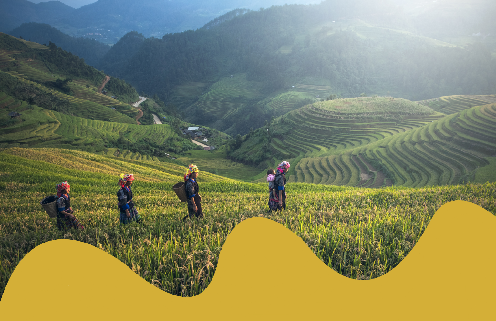
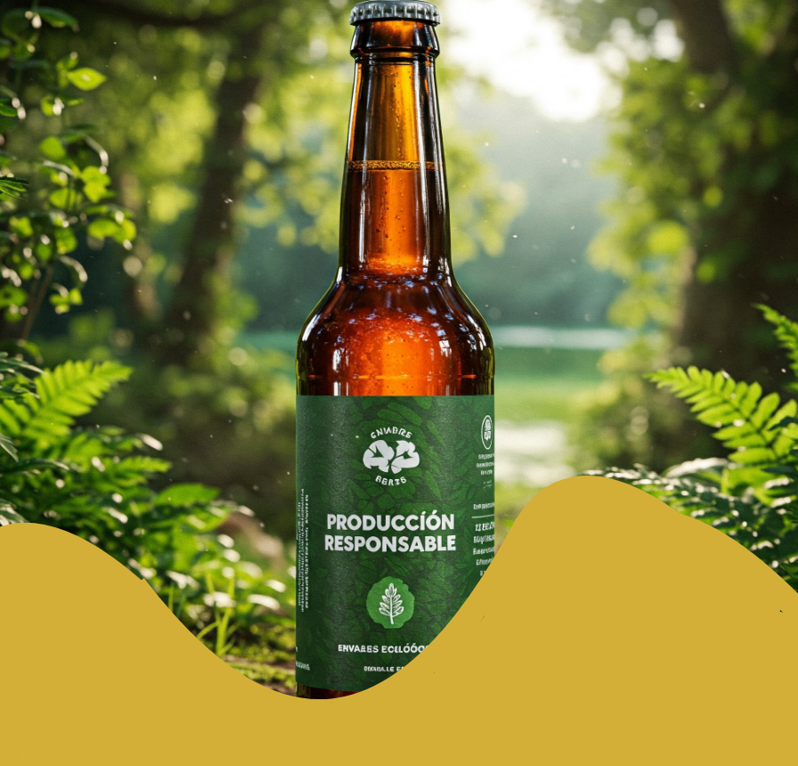
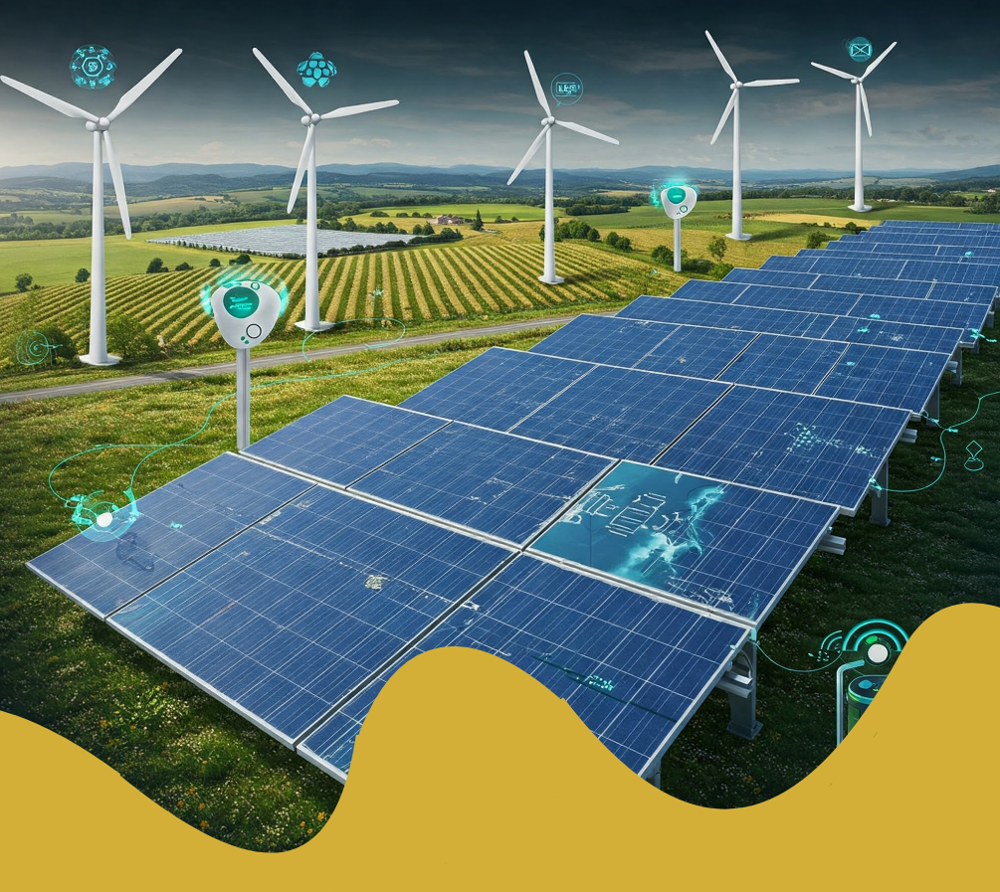

Sostenibilidad
-

En YAKÁ, seleccionamos cuidadosamente insumos provenientes del Amazonas, una región rica en biodiversidad y cultura. Nuestro compromiso con la sostenibilidad comienza desde el origen de nuestros ingredientes. Al trabajar directamente con pequeños productores locales, no solo garantizamos la frescura y autenticidad de nuestros sabores, sino que también impulsamos la economía de las comunidades amazónicas.
-

Nuestras etiquetas están fabricadas con materiales biodegradables, que se descomponen de forma natural sin dejar residuos contaminantes. Este enfoque ecoamigable nos permite brindar productos que no solo conquistan el paladar, sino que también contribuyen a proteger el planeta.
-

En YAKÁ, implementamos técnicas innovadoras que optimizan el uso de recursos naturales. Nuestras instalaciones están diseñadas para reducir significativamente el consumo de agua, un recurso vital que cuidamos con especial atención. Mediante sistemas de recirculación y filtrado, reaprovechamos el agua utilizada durante la producción, minimizando el desperdicio.